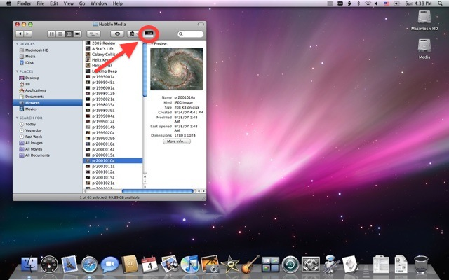
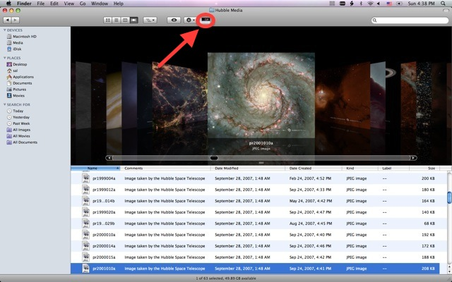
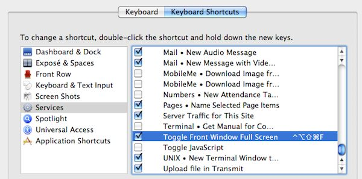

Browse Full Screen
The Flow View in Mac OS X provides detailed visual information about the files displayed within a Finder window, and naturally fits with the Quick Look feature that lets you scan many documents without having to open them in their original authoring applications.
If you’re looking for any easy quick way to change the view of a Finder window to Flow View and to expand its display area on screen to maximize its visual effectivness, the Browse Full Screen toolbar script makes switching to Flow View and displaying the window full screen, a single click in the Finder toolbar. And when you're done purusing your files, a single click on the same script returns the window back to its original state.

(Above) The Finder window before running the Browse Full Screen script. (Below) The same Finder window after the script has run.

Installation
To install the Browse Full Screen script, follow these simple steps:
- Download the utility, and place it in the Applications > Utilities folder.
- Drag the script to the toolbar of any Finder window and hold in place until the cursor changes to include a plus-sign, then release the mouse. The icon of the script will now be added to the toolbar.
To use this utility, click the script icon in the toolbar of the Finder window you want to zoom, and the window will be resized and the view mode changed to Flow View. In addition, the Dock will be hidden to maximize the window display area on the screen.
NOTE: Do not close the window when it is displaying full-screen as those window measurements will become the default for the displayed folder. To return the window to its previous state, click the toolbar script icon again.
The “Toggle Front Window Full Screen” Service
In Mac OS X v10.6 and higher, the same functionality in the Browse Full Screen applet can be delivered as a system service, able to be called using a chosen keystroke combination.
To install the Toggle Front Window Full Screen service, follow these simple steps:
- Download and unpack the service workflow file archive.
- In Mac OS X v10.7 (Lion) or higher, double-click the workflow file to access the automatic installation dialog, and click the Install button. In Mac OS X v10.6 (Snow Leopard) move the unpacked service workflow file to the Home > Library > Services folder (make a Services folder if needed).
- Select the Keyboard Shortcuts tab in the Keyboard preference pane in the System Preferences application. Select the Toggle Front Window Full Screen service from the list of services, and press the Return key. Now press the key combination you want to use to run the service.

To use this service, while in the Finder, press the keyboard combination you assigned in the Keyboard Shortcuts preference pane. The front window will be zoomed full screen. Press the keyboard combination again and the window will return to its previous state.